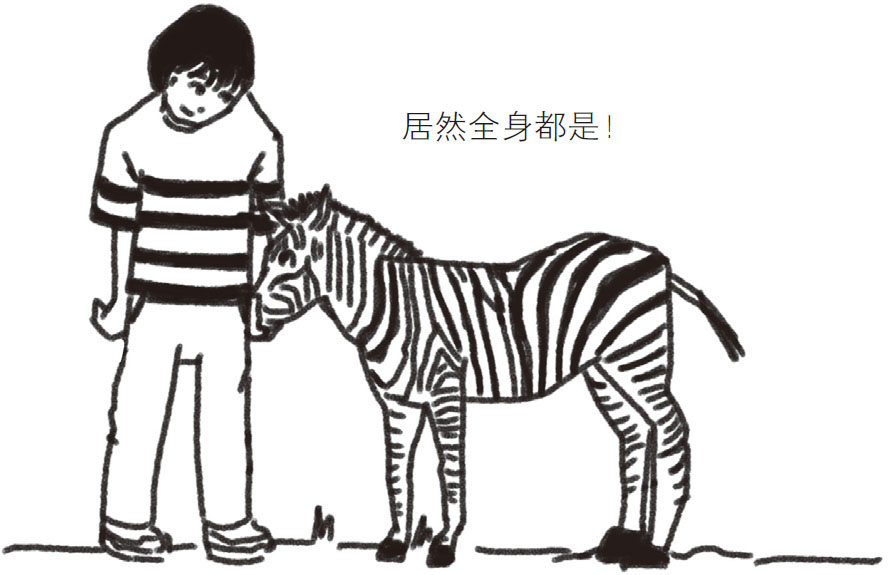

在广袤的大草原上，生活着各种各样的动物，这些动物有着各不相同的外表。例如，斑马身上布满了纯白与纯黑相间的条纹（如图1-8所示）。可是，大家有没有想过，斑马身上的条纹那么醒目，难道不怕引来大型捕食动物吗？因为根据常识，越是外表醒目的动物越是容易被天敌发现，这对它们的生存非常不利。事实上，斑马的身上为什么布满了条纹，到现在依然是未解之谜。民间流传着以下几种尚未得到证实的说法。

图1-8 斑马身上黑白相间的条纹
据说一群斑马在奔跑时，它们身上纵横交错的条纹会迷乱天敌的双眼，让对方很难捕捉到它们。乍一看，这个说法让人无法理解：如果在草原上有一群斑马在奔跑，那不是特别抢眼的景象吗？
其实，不是每种生物都能准确地分辨各种颜色。由于人类对色彩的辨别能力非常高，所以我们才会觉得草原上奔跑的斑马十分抢眼，但狮子等猫科动物对色彩的辨别能力非常弱，它们眼中的世界就像一部黑白电影 。绿色的草原、褐色的树干、彩色的花朵在狮子眼中都是黑白的。因此，如果成群的斑马在眼前奔跑，大量黑白条纹在无规则地乱舞，它们说不定真的会被迷惑。
但是这个说法并没有坚实的科学依据。草原上每天都有狮子冲向斑马群，捕杀这些可怜的猎物。如此看来，斑马身上的条纹未必对天敌起到了迷惑作用。
这种解释比幻术之说稍复杂一些，它认为条纹对斑马的体温调节有一定的作用。众所周知，在众多颜色中，黑色吸热能力最强，白色吸热能力最弱 。大家或许做过这样的实验：用放大镜聚集太阳光来点燃一张纸。如果是一张黑色的纸，很快就会燃烧起来；如果是一张白色的纸，就没那么容易燃烧。
同理，当太阳光照射在斑马身上时，黑色部分的温度会稍高一些，而白色部分的温度会稍低一些。这样就在斑马身体表面产生了温度差，温度差会引起空气的对流，进而起到平衡体温的作用。斑马身上的条纹听上去很像一台电风扇。
虽然这个说法很有趣，但是有人认为黑色部分与白色部分的温度相差不会太大，因此不会产生明显的空气对流。所以这个说法还需要进一步验证。
社会功能之说认为，斑马身上的条纹主要是为了让自己看起来与众不同，便于和其他种类的动物进行区分。动物的皮肤和毛发与生俱来，不会随意改变，所以斑马从出生开始就长着满身的黑白条纹，使其他斑马能以最快的速度找到自己的同伴。斑马是一种食草动物，对它们来说，共同防御食肉动物的袭击是非常重要的。离开同伴、独自活动的斑马是很容易遭到袭击的。
但是，这个说法有很大的疑点。草原上的食草动物除了斑马，还有瞪羚、角马等，它们的外观都不起眼，但是仍然很好地过着群居生活。如果社会功能之说成立，为什么其他食草动物没有进化成类似斑马一样，有着醒目外观的动物呢？
总之，斑马身上为什么布满条纹至今不得而知。或许在不久的将来，某位读者可以解开这个谜题。
尽管这是个谜，但我们还是要问一下斑马身上美丽的条纹是怎样形成的？在讨论这个问题之前，先给大家讲一个与条纹有关的故事。马和斑马的血缘非常近，我们将马和斑马杂交，生出有斑纹的小马。与斑马相比，这些小马身上的条纹的间隔要窄一些，并且色泽也不如斑马那样醒目。我们知道，马的身上是没有条纹的，杂交小马身上的条纹不如斑马那样黑白分明可以理解，但是为什么它们身上条纹的间隔比斑马的窄呢？
这样的条纹其实隐藏着细胞学的相关知识。我们曾经在实验室中做过这样的实验：观察身上布满条纹的斑马鱼的生长过程及外观变化。斑马鱼小的时候，身上并没有非常清晰的条纹，但是随着不断的成长，它们的身上会逐渐出现条纹或水珠状花纹。
我们可以买一些有黄色和黑色条纹的小斑马鱼，并在显微镜下观察它们成长过程中皮肤的变化。小时候，这些斑马鱼的皮肤表层杂乱地分布着黄色和黑色的细胞。随着时间的推移，这些细胞逐渐分化，组成了一个个只有黄色或只有黑色细胞的独立区域。在这个过程中还可以发现，黄色细胞群中原有的少量黑色细胞会逐渐消失，这意味着黑色细胞逐渐走向死亡。也就是说，进入到黄色细胞群中的黑色细胞被黄色细胞杀死了 。
既然黄色细胞会杀死黑色细胞，那么对于斑马鱼来说，是不是没有黄色细胞更好呢？答案是否定的。我们用激光将所有黄色细胞杀死，原以为剩下的黑色细胞会无限地增长，没想到有近三成的黑色细胞很快死亡了。由此可以推断，黄色细胞中含有促进黑色细胞成长的元素。
黄色细胞在杀死位于其附近的黑色细胞的同时，也在帮助远离它的黑色细胞成长 。如果用父母与子女的关系来比喻，会更容易理解这个现象：当父母与子女不住在一起时会互相惦记、互相照顾，住在一起时又会彼此嫌弃。当然，这不是一个特别恰当的比喻，因为父母是不会杀害自己的子女的。
那么，黄色细胞与黑色细胞的数量是如何实现平衡的呢？答案是：黄色细胞多的区域，其周围的黑色细胞会被杀死；而在远离黄色细胞的区域中，黑色细胞存活的可能性会增高。于是，含有大量黄色细胞的区域会逐渐变为纯黄色条纹，而这些区域的周围则是黑色细胞的聚集区，黑色条纹就这样慢慢形成了。
黄色细胞有两种作用：一是杀死附近的黑色细胞的抑制作用，二是帮助远离的黑色细胞生长的促进作用。条纹的间距取决于促进作用与抑制作用之间的距离之比 。比值越大，则黑色细胞群形成的位置越远，条纹间隔也就越大。如果比值是1，那么黄色细胞对黑色细胞的抑制作用和促进作用会相互抵消，导致无法形成条纹。
对于斑马来说，促进与抑制的距离比为10︰1，而马与斑马杂交生出的小马的条纹间隔之所以会变小，是因为马的这个比值几乎是1（没有条纹），大大降低了小马对应的比值。
最先提出这种图案产生方式的是英国天才数学家阿兰·图灵。他用数学方法研究后发现，当两种细胞通过近距离和远距离作用而相互影响时，可以形成波纹状或水珠状条纹，图灵称之为“反应扩散系统 ”。
反应扩散系统不仅在斑马和斑马鱼身上有所体现，在其他动物身上也能找到它的影子，比如螺类的条纹和其他热带鱼的花纹。
不同动物皮肤表面的条纹竟然是基于同一原理形成的，真是不可思议！